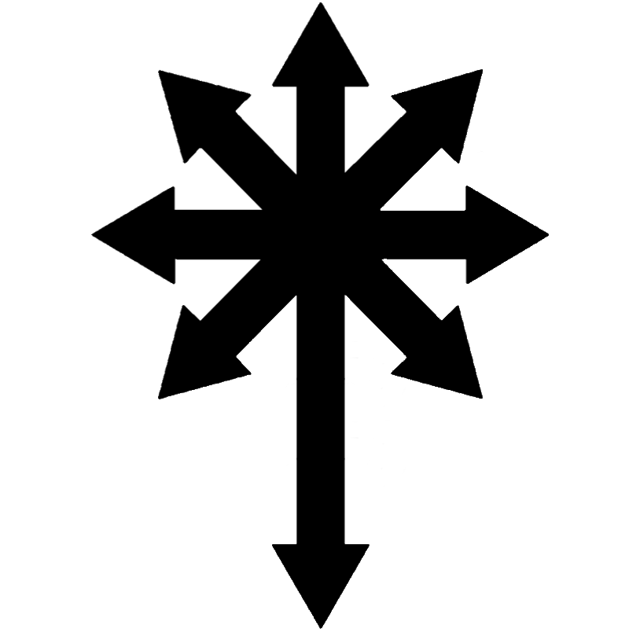

[Log 12]]: Chaos is free, ever flowing. It is what creates and destroys in our universe. It is embedded in the very DNA. If chaos were non-existent, life would be non-existent. Feel this universal DNA flow through your veins. Feel the sharp spikes clawing out of your vessels, yearning for non-objectivity, the intangible… Let it take over your body. Then become one with it, lose yourself in it. Become everything and nothing at once. The goal of chaos is to bring humanity into a new age. That is the goal I’ve decided upon anyway. There is no “true” or “real” goal in any of this, unless you want there to be. It is all up to you.
Nothing is true, everything is permitted.
The cross of chaos points in mainly one direction. That is simply the direction or path I am currently on. I can decide to change my path at anytime. But I will not change it until I’ve fully built the road.
Nothing is true, everything is permitted.
Beware, the chaos at extremities can lead to full on insanity. Unless, that is the path you desire to take. Warble, warble, warble, and warp & morph to find your frequency through the static. Constructing the noise results into an object, tangible and direct. Letting the noise do what it does results in who knows what? More noise? A pattern? A non-pattern? Pattern within a pattern? Pattern within many patterns? Patterns interweaving into one another that are not discernible with the wicked eye, but with closer inspection are obvious and defined? No paths? Many paths? The in-between? The in-between of that in-between?
Nothing is true, everything is permitted.
Find beauty in the mistakes. Those are the paths that are undiscovered. Untouched worlds that can lead to many new worlds.
Nothing is true, everything is permitted.
I heard the voice faintly call to me. I couldn’t make out what it said though. Then it screamed as they were being murdered, then it sang as if all emotions were put into every note. Then it laughed, then laughed like a baby that morphed in to a demon. Now it switches back and forth. Is it to startle me? Or is it just laughing so hard that it can’t even control what it transforms/morphs into.
I’m at peace, it is all flowing at a pace that is in tune with me. I’m at harmony with it. I know this won’t last for that much longer but that’s what makes it peaceful in the first place. If I was only at peace, I wouldn’t even know what being at peace is, or meant. Why not only be at peace you ask? Because it is just not possible to only be at peace. This is the mistake of the garden of eden. A falsified version of peace. Hiding in a forcefully constructed world of peace can only last for so long. The walls will eventually come down. That is why we bit the apple. We humans are too curious and complex to be in only one state of being (There is nothing “evil” about being curious). It is fine to not be at peace. That is apart of being human, being the universe, being chaos. Being honest to yourself and tuning into your frequency, going with the flow of your water. We are many things at once. Never one.